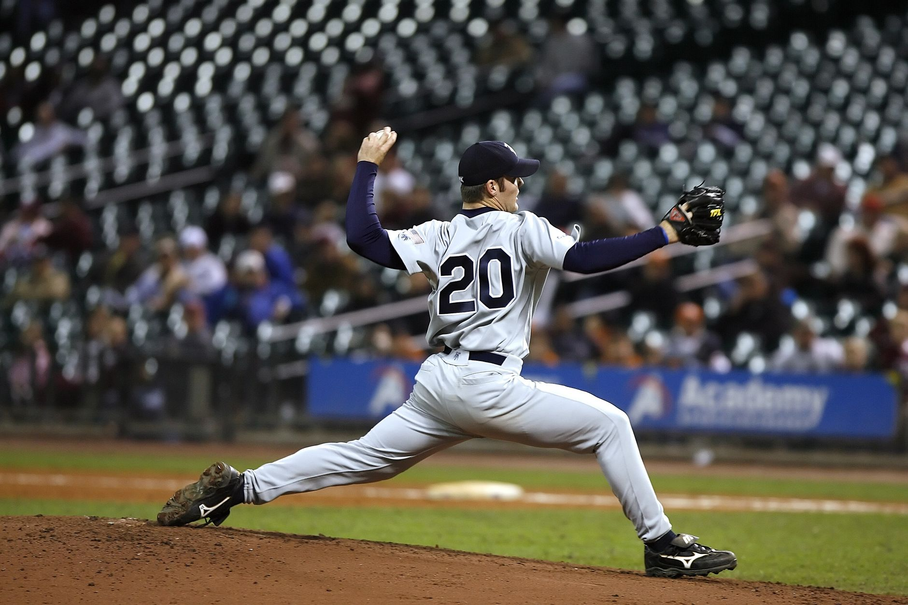

A shakeup at the top of the mound
In the high-stakes world of Major League Baseball, consistency is the hardest trait to maintain. As the season progresses, the gap between elite performers and league average starters often widens or narrows based on small streaks of dominance. The latest update to the MLB starting pitcher power rankings has caught many analysts by surprise, specifically due to a significant change in the second position.
For several weeks, the top two spots remained relatively static, providing a sense of stability for fans and fantasy baseball players alike. However, recent performances have disrupted that equilibrium. A surge in velocity and improved command from a rising star has pushed a veteran mainstay out of the silver medal position, signaling a changing of the guard in the pitching hierarchy.
Analyzing the new number two contender
The movement at the No. 2 spot is not merely a result of luck or a favorable schedule. It is the product of sustained statistical excellence across several key metrics. To climb this high in the power rankings, a pitcher must demonstrate more than just a low ERA; they must show they can navigate deep into games while maintaining strikeout efficiency.
The new occupant of the second rank has displayed an uncanny ability to pitch out of jams. Whether it is a bases-loaded situation in the fifth inning or a high-leverage showdown with the league's best hitters, this pitcher has remained unflappable. This mental toughness is what separates the good starters from the true aces of the game.
The evolution of the modern starter requires a blend of high-spin fastballs and devastating breaking balls, and the current No. 2 pitcher has mastered this balance better than anyone else this month.
Key metrics driving the rankings
When analysts compile these power rankings, they look far beyond the traditional box score. While wins and losses still carry weight in the eyes of the public, professional scouts and data scientists focus on underlying metrics that predict future success. These metrics provide a clearer picture of whether a pitcher is truly dominant or simply benefiting from good defense.
By focusing on these advanced statistics, the power rankings provide a more accurate representation of who the most effective pitchers actually are. A pitcher might have a high ERA due to a poor bullpen, but if their FIP is low, they will still climb the rankings because their individual performance remains elite.
The battle for the number one spot
While the change at No. 2 has stolen the headlines, the race for the No. 1 spot remains just as intense. The current leader has been performing at a level rarely seen in the modern era, making them the benchmark for every other starter in the league. However, the gap between the top two pitchers is closing rapidly.
As we move into the final stretch of the season, every start becomes a playoff-caliber performance. The pressure to maintain a spot in the top five is immense, as even a single bad outing can cause a pitcher to tumble down the rankings. For the current No. 1, the challenge is no longer just beating the hitters, but beating the expectations set by their own historic season.
Looking ahead to the postseason
These power rankings serve as a vital preview for what we can expect in the upcoming postseason. Teams looking to make a deep run in October will rely heavily on the arms currently occupying these top spots. A dominant starting rotation is often the difference between a championship trophy and an early exit.
As managers prepare their playoff rotations, they will be looking closely at these trends. A pitcher who is trending upward in the power rankings is a much more attractive option for a Game 1 or Game 5 start than a veteran who is seeing their numbers decline. The momentum seen in this month's update could dictate the entire narrative of the playoffs.
Final thoughts on the pitching landscape
Baseball is a game of momentum, and the pitching landscape is currently in a state of flux. Whether you are a fan of a specific team or a general enthusiast of the sport, watching these rankings evolve is part of the excitement of the long MLB season. The shift at No. 2 is just the beginning of what promises to be a thrilling conclusion to the year.
While we focus on the dominance of the pitchers, don't forget that offense can change a game in an instant. Just as a great pitcher can shut down a lineup, a single swing can turn the tide for a struggling team. For example, if you enjoyed seeing how much impact a single moment can have, check out our coverage of how the Waldschmidt Pinch-Hit Homer Leads D-backs Comeback to see more exciting baseball action.
See Also
If you enjoyed this Baseball News article, check out Waldschmidt Pinch-Hit Homer Leads D-backs Comeback for more useful reading.